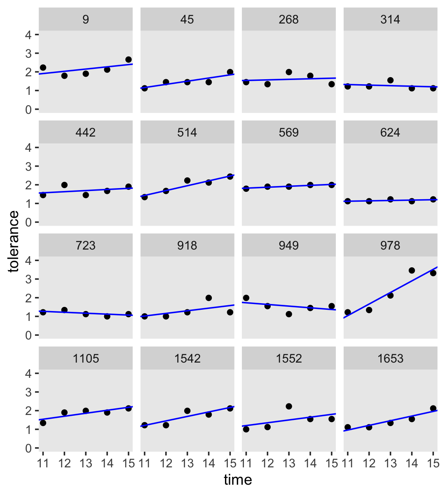
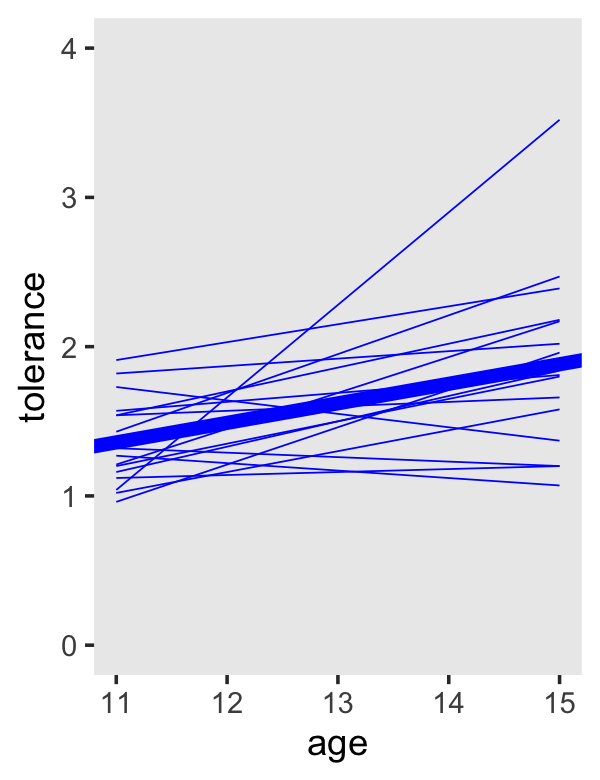
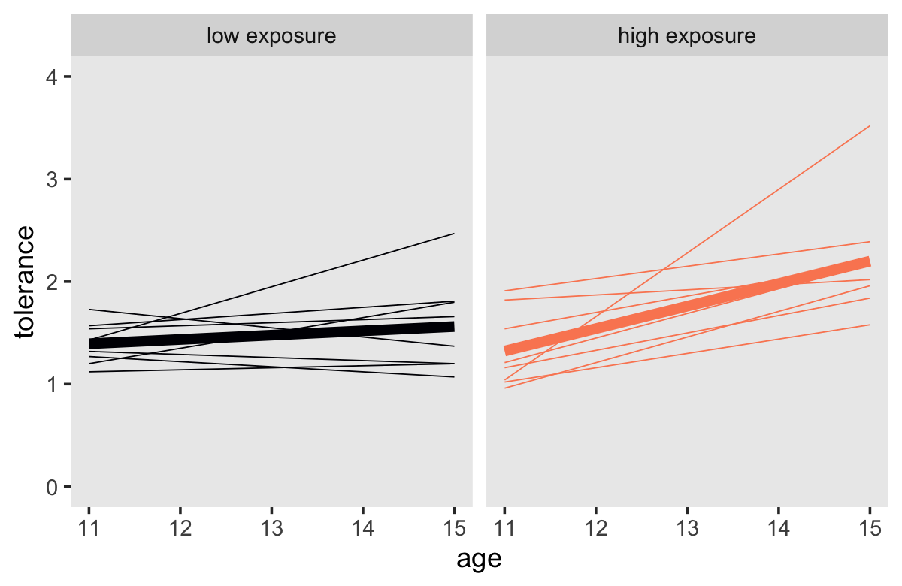
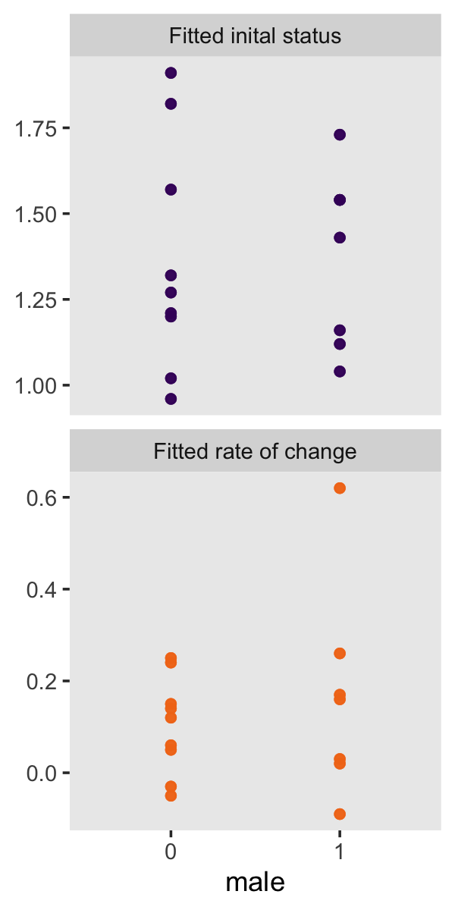

2 Exploring Longitudinal Data on Change
Wise researchers conduct descriptive exploratory analyses of their data before fitting statistical models. As when working with cross-sectional data, exploratory analyses of longitudinal data con reveal general patterns, provide insight into functional form, and identify individuals whose data do not conform to the general pattern. The exploratory analyses presented in this chapter are based on numerical and graphical strategies already familiar from cross-sectional work. Owing to the nature of longitudinal data, however, they are inevitably more complex in this new setting. (Singer & Willett, 2003, p. 16)
2.1 Creating a longitudinal data set
In longitudinal work, data-set organization is less straightforward because you can use two very different arrangements:
- A person-level data set, in which each person has one record and multiple variables contain the data from each measurement occasion
- A person-period data set, in which each person has multiple records—one for each measurement occasion (p. 17, emphasis in the original)
These are also sometimes referred to as the wide and long data formats, respectively.
As you will see, we will use two primary functions from the tidyverse to convert data from one format to another.
2.1.1 The person-level data set.
Here we load the person-level data from this UCLA web site. These are the NLY data (see Raudenbush & Chan, 2016) shown in the top of Figure 2.1.
library(tidyverse)
tolerance <- read_csv("https://stats.idre.ucla.edu/wp-content/uploads/2016/02/tolerance1.txt", col_names = T)
head(tolerance, n = 16)## # A tibble: 16 x 8
## id tol11 tol12 tol13 tol14 tol15 male exposure
## <dbl> <dbl> <dbl> <dbl> <dbl> <dbl> <dbl> <dbl>
## 1 9 2.23 1.79 1.9 2.12 2.66 0 1.54
## 2 45 1.12 1.45 1.45 1.45 1.99 1 1.16
## 3 268 1.45 1.34 1.99 1.79 1.34 1 0.9
## 4 314 1.22 1.22 1.55 1.12 1.12 0 0.81
## 5 442 1.45 1.99 1.45 1.67 1.9 0 1.13
## 6 514 1.34 1.67 2.23 2.12 2.44 1 0.9
## 7 569 1.79 1.9 1.9 1.99 1.99 0 1.99
## 8 624 1.12 1.12 1.22 1.12 1.22 1 0.98
## 9 723 1.22 1.34 1.12 1 1.12 0 0.81
## 10 918 1 1 1.22 1.99 1.22 0 1.21
## 11 949 1.99 1.55 1.12 1.45 1.55 1 0.93
## 12 978 1.22 1.34 2.12 3.46 3.32 1 1.59
## 13 1105 1.34 1.9 1.99 1.9 2.12 1 1.38
## 14 1542 1.22 1.22 1.99 1.79 2.12 0 1.44
## 15 1552 1 1.12 2.23 1.55 1.55 0 1.04
## 16 1653 1.11 1.11 1.34 1.55 2.12 0 1.25With person-level data, each participant has a single row. In these data, participants are indexed by their id number. To see how many participants are in these data, just count() the rows.
tolerance %>%
count()## # A tibble: 1 x 1
## n
## <int>
## 1 16The nrow() function will work, too.
tolerance %>%
nrow()## [1] 16With the base R cor() function, you can get the Pearson’s correlation matrix shown in Table 2.1.
cor(tolerance[ , 2:6]) %>%
round(digits = 2)## tol11 tol12 tol13 tol14 tol15
## tol11 1.00 0.66 0.06 0.14 0.26
## tol12 0.66 1.00 0.25 0.21 0.39
## tol13 0.06 0.25 1.00 0.59 0.57
## tol14 0.14 0.21 0.59 1.00 0.83
## tol15 0.26 0.39 0.57 0.83 1.00We used the round() function to limit the number of decimal places in the output. Leave it off and you’ll see cor() returns up to seven decimal places instead. It can be hard to see the patters within a matrix of numerals. It might be easier in a plot.
cor(tolerance[ , 2:6]) %>%
data.frame() %>%
rownames_to_column("row") %>%
pivot_longer(-row,
names_to = "column",
values_to = "correlation") %>%
mutate(row = factor(row) %>% fct_rev(.)) %>%
ggplot(aes(x = column, y = row)) +
geom_raster(aes(fill = correlation)) +
geom_text(aes(label = round(correlation, digits = 2)),
size = 3.5) +
scale_fill_gradient(low = "white", high = "red4", limits = c(0, 1)) +
scale_x_discrete(NULL, position = "top", expand = c(0, 0)) +
scale_y_discrete(NULL, expand = c(0, 0)) +
theme(axis.ticks = element_blank())If all you wanted was the lower diagonal, you could use the lowerCor() function from the psych package (Revelle, 2020).
psych::lowerCor(tolerance[ , 2:6])## tol11 tol12 tol13 tol14 tol15
## tol11 1.00
## tol12 0.66 1.00
## tol13 0.06 0.25 1.00
## tol14 0.14 0.21 0.59 1.00
## tol15 0.26 0.39 0.57 0.83 1.00For more ways to compute, organize, and visualize correlations within the tidyverse paradigm, check out the corrr package (Kuhn et al., 2020).
2.1.2 The person-period data set.
Here are the person-period data (i.e., those shown in the bottom of Figure 2.1).
tolerance_pp <- read_csv("https://stats.idre.ucla.edu/wp-content/uploads/2016/02/tolerance1_pp.txt",
col_names = T)
tolerance_pp %>%
slice(c(1:9, 76:80))## # A tibble: 14 x 6
## id age tolerance male exposure time
## <dbl> <dbl> <dbl> <dbl> <dbl> <dbl>
## 1 9 11 2.23 0 1.54 0
## 2 9 12 1.79 0 1.54 1
## 3 9 13 1.9 0 1.54 2
## 4 9 14 2.12 0 1.54 3
## 5 9 15 2.66 0 1.54 4
## 6 45 11 1.12 1 1.16 0
## 7 45 12 1.45 1 1.16 1
## 8 45 13 1.45 1 1.16 2
## 9 45 14 1.45 1 1.16 3
## 10 1653 11 1.11 0 1.25 0
## 11 1653 12 1.11 0 1.25 1
## 12 1653 13 1.34 0 1.25 2
## 13 1653 14 1.55 0 1.25 3
## 14 1653 15 2.12 0 1.25 4With data like these, the simple use of count() or nrow() won’t help us discover how many participants there are in the tolerance_pp data. One quick way is to count() the number of distinct() id values.
tolerance_pp %>%
distinct(id) %>%
count()## # A tibble: 1 x 1
## n
## <int>
## 1 16A fundamental skill is knowing how to convert longitudinal data in one format to the other. If you’re using packages within the tidyverse, the pivot_longer() function will get you from the person-level format to the person-period format.
tolerance %>%
# this is the main event
pivot_longer(-c(id, male, exposure),
names_to = "age",
values_to = "tolerance") %>%
# here we remove the `tol` prefix from the `age` values and then save the numbers as integers
mutate(age = str_remove(age, "tol") %>% as.integer()) %>%
# these last two lines just make the results look more like those in the last code chunk
arrange(id, age) %>%
slice(c(1:9, 76:80))## # A tibble: 14 x 5
## id male exposure age tolerance
## <dbl> <dbl> <dbl> <int> <dbl>
## 1 9 0 1.54 11 2.23
## 2 9 0 1.54 12 1.79
## 3 9 0 1.54 13 1.9
## 4 9 0 1.54 14 2.12
## 5 9 0 1.54 15 2.66
## 6 45 1 1.16 11 1.12
## 7 45 1 1.16 12 1.45
## 8 45 1 1.16 13 1.45
## 9 45 1 1.16 14 1.45
## 10 1653 0 1.25 11 1.11
## 11 1653 0 1.25 12 1.11
## 12 1653 0 1.25 13 1.34
## 13 1653 0 1.25 14 1.55
## 14 1653 0 1.25 15 2.12You can learn more about the pivot_longer() function here and here.
As hinted at in the above hyperlinks, the opposite of the pivot_longer() function is pivot_wider(). We can use pivot_wider() to convert the person-period tolerance_pp data to the same format as the person-level tolerance data.
tolerance_pp %>%
# we'll want to add that `tol` prefix back to the `age` values
mutate(age = str_c("tol", age)) %>%
# this variable is just in the way. we'll drop it
select(-time) %>%
# here's the main action
pivot_wider(names_from = age, values_from = tolerance)## # A tibble: 16 x 8
## id male exposure tol11 tol12 tol13 tol14 tol15
## <dbl> <dbl> <dbl> <dbl> <dbl> <dbl> <dbl> <dbl>
## 1 9 0 1.54 2.23 1.79 1.9 2.12 2.66
## 2 45 1 1.16 1.12 1.45 1.45 1.45 1.99
## 3 268 1 0.9 1.45 1.34 1.99 1.79 1.34
## 4 314 0 0.81 1.22 1.22 1.55 1.12 1.12
## 5 442 0 1.13 1.45 1.99 1.45 1.67 1.9
## 6 514 1 0.9 1.34 1.67 2.23 2.12 2.44
## 7 569 0 1.99 1.79 1.9 1.9 1.99 1.99
## 8 624 1 0.98 1.12 1.12 1.22 1.12 1.22
## 9 723 0 0.81 1.22 1.34 1.12 1 1.12
## 10 918 0 1.21 1 1 1.22 1.99 1.22
## 11 949 1 0.93 1.99 1.55 1.12 1.45 1.55
## 12 978 1 1.59 1.22 1.34 2.12 3.46 3.32
## 13 1105 1 1.38 1.34 1.9 1.99 1.9 2.12
## 14 1542 0 1.44 1.22 1.22 1.99 1.79 2.12
## 15 1552 0 1.04 1 1.12 2.23 1.55 1.55
## 16 1653 0 1.25 1.11 1.11 1.34 1.55 2.122.2 Descriptive analysis of individual change over time
The following “descriptive analyses [are intended to] reveal the nature and idiosyncrasies of each person’s temporal pattern of growth, addressing the question: How does each person change over time” (p. 23)?
2.2.1 Empirical growth plots.
Empirical growth plots show individual-level sequence in a variable of interest over time. We’ll put age on the \(x\)-axis, tolerance on the y-axis, and make our variant of Figure 2.2 with geom_point(). It’s the facet_wrap() part of the code that splits the plot up by id.
tolerance_pp %>%
ggplot(aes(x = age, y = tolerance)) +
geom_point() +
coord_cartesian(ylim = c(1, 4)) +
theme(panel.grid = element_blank()) +
facet_wrap(~id)By default, ggplot2 sets the scales of the \(x\)- and \(y\)-axes to the same values across subpanels. If you’d like to free that constraint, play around with the scales argument within facet_wrap().
2.2.2 Using a trajectory to summarize each person’s empirical growth record.
If we wanted to connect the dots, we might just add a geom_line() line.
tolerance_pp %>%
ggplot(aes(x = age, y = tolerance)) +
geom_point() +
geom_line() +
coord_cartesian(ylim = c(1, 4)) +
theme(panel.grid = element_blank()) +
facet_wrap(~id)
However, Singer and Willett recommend two other approaches:
- nonparametric smoothing
- parametric functions
2.2.2.1 Smoothing the empirical growth trajectory nonparametrically.
For our version of Figure 2.3, we’ll use a loess smoother. When using the stat_smooth() function in ggplot2, you can control how smooth or wiggly the line is with the span argument.
tolerance_pp %>%
ggplot(aes(x = age, y = tolerance)) +
geom_point() +
stat_smooth(method = "loess", se = F, span = .9) +
coord_cartesian(ylim = c(1, 4)) +
theme(panel.grid = element_blank()) +
facet_wrap(~id)2.2.2.2 Smoothing the empirical growth trajectory using OLS single-level Bayesian regression.
Although “fitting person-specific regression models, one individual at a time, is hardly the most efficient use of longitudinal data” (p. 28), we may as well play along with the text. It’ll have pedagogical utility. You’ll see.
For this section, we’ll take a cue from Hadley Wickham and use group_by() and nest() to make a tibble composed of tibbles (i.e., a nested tibble).
by_id <-
tolerance_pp %>%
group_by(id) %>%
nest()You can get a sense of what we did with head().
by_id %>% head()## # A tibble: 6 x 2
## # Groups: id [6]
## id data
## <dbl> <list>
## 1 9 <tibble [5 × 5]>
## 2 45 <tibble [5 × 5]>
## 3 268 <tibble [5 × 5]>
## 4 314 <tibble [5 × 5]>
## 5 442 <tibble [5 × 5]>
## 6 514 <tibble [5 × 5]>As indexed by id, each participant now has their own data set stored in the data column. To get a better sense, we’ll use our double-bracket subsetting skills to open up the first data set, the one for id == 9. If you’re not familiar with this skill, you can learn more from Chapter 9 of Roger Peng’s great (2019) online book, R programming for data science, or Jenny Bryan’s fun and useful talk, Behind every great plot there’s a great deal of wrangling.
by_id$data[[1]]## # A tibble: 5 x 5
## age tolerance male exposure time
## <dbl> <dbl> <dbl> <dbl> <dbl>
## 1 11 2.23 0 1.54 0
## 2 12 1.79 0 1.54 1
## 3 13 1.9 0 1.54 2
## 4 14 2.12 0 1.54 3
## 5 15 2.66 0 1.54 4Our by_id data object has many data sets stored in a higher-level data set. The code we used is verbose, but that’s what made it human-readable. Now we have our nested tibble, we can make a function that will fit the simple linear model tolerance ~ 1 + time to each id-level data set. Why use time as the predictor? you ask. On page 29 in the text, Singer and Willett clarified they fit their individual models with \((\text{age} - 11)\) in order to have the model intercepts centered at 11 years old rather than 0. If we wanted to, we could make an \((\text{age} - 11)\) variable like so.
by_id$data[[1]] %>%
mutate(age_minus_11 = age - 11)## # A tibble: 5 x 6
## age tolerance male exposure time age_minus_11
## <dbl> <dbl> <dbl> <dbl> <dbl> <dbl>
## 1 11 2.23 0 1.54 0 0
## 2 12 1.79 0 1.54 1 1
## 3 13 1.9 0 1.54 2 2
## 4 14 2.12 0 1.54 3 3
## 5 15 2.66 0 1.54 4 4Did you notice how our age_minus_11 variable is the same as the time variable already in the data set? Yep, that’s why we’ll be using time in the model. In our data, \((\text{age} - 11)\) is encoded as time.
Singer and Willett used OLS to fit their exploratory models. We could do that to with the lm() function and we will do a little of that in this project. But let’s get frisky and fit the models as Bayesians, instead. Our primary statistical package for fitting Bayesian models will be Paul Bürkner’s brms. Let’s open it up.
library(brms)Since this is our first Bayesian model, we should start slow. The primary model-fitting function in brms is brm(). The function is astonishingly general and includes numerous arguments, most of which have sensible defaults. The primary two arguments are data and formula. I’m guessing they’re self-explanatory. I’m not going to go into detail on the three arguments at the bottom of the code. We’ll go over them later. For simple models like these, I would have omitted them entirely, but given the sparsity of the data (i.e., 5 data points per model), I wanted to make sure we gave the algorithm a good chance to arrive at reasonable estimates.
fit2.1 <-
brm(data = by_id$data[[1]],
formula = tolerance ~ 1 + time,
prior = prior(normal(0, 2), class = b),
iter = 4000, chains = 4, cores = 4,
seed = 2,
file = "fits/fit02.01")We just fit a single-level Bayesian regression model for our first participant. We saved the results as an object named fit2.1. We can return a useful summary of fit2.1 with either print() or summary(). Since it’s less typing, we’ll use print().
print(fit2.1)## Family: gaussian
## Links: mu = identity; sigma = identity
## Formula: tolerance ~ 1 + time
## Data: by_id$data[[1]] (Number of observations: 5)
## Samples: 4 chains, each with iter = 4000; warmup = 2000; thin = 1;
## total post-warmup samples = 8000
##
## Population-Level Effects:
## Estimate Est.Error l-95% CI u-95% CI Rhat Bulk_ESS Tail_ESS
## Intercept 1.91 0.53 0.81 3.00 1.00 3901 2653
## time 0.12 0.21 -0.33 0.54 1.00 3844 2519
##
## Family Specific Parameters:
## Estimate Est.Error l-95% CI u-95% CI Rhat Bulk_ESS Tail_ESS
## sigma 0.59 0.40 0.20 1.67 1.00 1723 2671
##
## Samples were drawn using sampling(NUTS). For each parameter, Bulk_ESS
## and Tail_ESS are effective sample size measures, and Rhat is the potential
## scale reduction factor on split chains (at convergence, Rhat = 1).The ‘Intercept’ and ‘time’ coefficients are the primary regression parameters. Also notice ‘sigma,’ which is our variant of the residual standard error you might get from an OLS output (e.g., from base R lm()). Since we’re Bayesians, the output summaries do not contain \(p\)-values. But we do get posterior standard deviations (i.e., the ‘Est.Error’ column) and the upper- and lower-levels of the percentile-based 95% intervals.
You probably heard somewhere that Bayesian statistics require priors. We can see what those were by pulling them out of our fit2.1 object.
fit2.1$prior## prior class coef group resp dpar nlpar bound source
## normal(0, 2) b user
## normal(0, 2) b time (vectorized)
## student_t(3, 2.1, 2.5) Intercept default
## student_t(3, 0, 2.5) sigma defaultThe prior in the top line, normal(0, 2), is for all parameters of class = b. We actually specified this in our brm() code, above, with the code snip: prior = prior(normal(0, 2), class = b). At this stage in the project, my initial impulse was to leave this line blank and save the discussion of how to set priors by hand for later. However, the difficulty is that the first several models we’re fitting are all of \(n = 5\). Bayesian statistics handle small-\(n\) models just fine. However, when your \(n\) gets small, the algorithms we use to implement our Bayesian models benefit from priors that are at least modestly informative. As it turns out, the brms default priors are flat for parameters of class = b. They offer no information beyond that contained in the likelihood. To stave off algorithm problems with our extremely-small-\(n\) data subsets, we used normal(0, 2) instead. In our model, the only parameter of class = b is the regression slope for time. On the scale of the data, normal(0, 2) is a vary-permissive prior for our time slope.
In addition to our time slope parameter, our model contained an intercept and a residual variance. From the fit2.1$prior output, we can see those were student_t(3, 2.1, 2.5) and student_t(3, 0, 2.5), respectively. brms default priors are designed to be weakly informative. Given the data and the model, these priors have a minimal influence on the results. We’ll focus more on priors later in the project. For now just recognize that even if you don’t specify your priors, you can’t escape using some priors when using brm(). This is a good thing.
Okay, so that was the model for just one participant. We want to do that for all 16. Instead of repeating that code 15 times, we can work in bulk. With brms, you can reuse a model with the update() function. Here’s how to do that with the data from our second participant.
fit2.2 <-
update(fit2.1,
newdata = by_id$data[[2]],
control = list(adapt_delta = .9),
file = "fits/fit02.02")Peek at the results.
print(fit2.2)## Family: gaussian
## Links: mu = identity; sigma = identity
## Formula: tolerance ~ 1 + time
## Data: by_id$data[[2]] (Number of observations: 5)
## Samples: 4 chains, each with iter = 4000; warmup = 2000; thin = 1;
## total post-warmup samples = 8000
##
## Population-Level Effects:
## Estimate Est.Error l-95% CI u-95% CI Rhat Bulk_ESS Tail_ESS
## Intercept 1.14 0.33 0.52 1.78 1.00 3521 2189
## time 0.17 0.13 -0.08 0.43 1.00 3528 2322
##
## Family Specific Parameters:
## Estimate Est.Error l-95% CI u-95% CI Rhat Bulk_ESS Tail_ESS
## sigma 0.33 0.26 0.11 1.05 1.00 1403 1984
##
## Samples were drawn using sampling(NUTS). For each parameter, Bulk_ESS
## and Tail_ESS are effective sample size measures, and Rhat is the potential
## scale reduction factor on split chains (at convergence, Rhat = 1).Different participants yield different model results.
Looking ahead a bit, we’ll need to know how to get the \(R^2\) for a single-level Gaussian model. With brms, you do that with the bayes_R2() function.
bayes_R2(fit2.2)## Estimate Est.Error Q2.5 Q97.5
## R2 0.6245837 0.2478878 0.01123645 0.8148629Though the default spits out summary statistics, you can get the full posterior distribution for the \(R^2\) by specifying summary = F.
bayes_R2(fit2.2, summary = F) %>%
str()## num [1:8000, 1] 0.634555 0.378802 0.002547 0.000111 0.002377 ...
## - attr(*, "dimnames")=List of 2
## ..$ : NULL
## ..$ : chr "R2"Our code returned a numeric vector. If you’d like to plot the results with ggplot2, you’ll need to convert the vector to a data frame.
bayes_R2(fit2.2, summary = F) %>%
data.frame() %>%
ggplot(aes(x = R2)) +
geom_density(fill = "black") +
scale_x_continuous(expression(italic(R)[Bayesian]^2), limits = c(0, 1)) +
scale_y_continuous(NULL, breaks = NULL) +
theme(panel.grid = element_blank())You’ll note how non-Gaussian the Bayesian \(R^2\) can be. Also, with the combination of default minimally-informative priors and only 5 data points, there’ massive uncertainty in the shape. As such, the value of central tendency will vary widely based on which statistic you use.
bayes_R2(fit2.2, summary = F) %>%
data.frame() %>%
summarise(mean = mean(R2),
median = median(R2),
mode = tidybayes::Mode(R2))## mean median mode
## 1 0.6245837 0.7477409 0.7979278By default, bayes_R2() returns the mean. You can get the median with the robust = TRUE argument. To pull the mode, you’ll need to use summary = F and feed the results into a mode function, like tidybayes::Mode().
I should also point out the brms package did not get these \(R^2\) values by traditional method used in, say, OLS estimation. To learn more about how the Bayesian \(R^2\) sausage is made, check out Gelman, Goodrich, Gabry, and Vehtari’s (2019) paper, [R-squared for Bayesian regression models]https://www.tandfonline.com/doi/full/10.1080/00031305.2018.1549100).
With a little tricky programming, we can use the purrr::map() function to serially fit this model to each of our participant-level data sets. We’ll save the results as fits.
fits <-
by_id %>%
mutate(model = map(data, ~update(fit2.1, newdata = ., seed = 2)))Let’s walk through what we did. The map() function takes two primary arguments, .x and .f, respectively. We set .x = data, which meant we wanted to iterate over the contents in our data vector. Recall that each row of data itself contained an entire data set–one for each of the 16 participants. It’s with the second argument .f that we indicated what we wanted to do with our rows of data. We set that to .f = ~update(fit2.1, newdata = ., seed = 2). With the ~ syntax, we entered in a formula, which was update(fit2.1, newdata = ., seed = 2). Just like we did with fit2.2, above, we reused the model formula and other technical specs from fit2.1. Now notice the middle part of the formula, newdata = .. That little . refers to the element we specified in the .x argument. What this combination means is that for each of the 16 rows of our nested by_id tibble, we plugged in the id-specific data set into update(fit, newdata[[i]]) where i is simply meant as a row index. The new column, model, contains the output of each of the 16 iterations.
print(fits)## # A tibble: 16 x 3
## # Groups: id [16]
## id data model
## <dbl> <list> <list>
## 1 9 <tibble [5 × 5]> <brmsfit>
## 2 45 <tibble [5 × 5]> <brmsfit>
## 3 268 <tibble [5 × 5]> <brmsfit>
## 4 314 <tibble [5 × 5]> <brmsfit>
## 5 442 <tibble [5 × 5]> <brmsfit>
## 6 514 <tibble [5 × 5]> <brmsfit>
## 7 569 <tibble [5 × 5]> <brmsfit>
## 8 624 <tibble [5 × 5]> <brmsfit>
## 9 723 <tibble [5 × 5]> <brmsfit>
## 10 918 <tibble [5 × 5]> <brmsfit>
## 11 949 <tibble [5 × 5]> <brmsfit>
## 12 978 <tibble [5 × 5]> <brmsfit>
## 13 1105 <tibble [5 × 5]> <brmsfit>
## 14 1542 <tibble [5 × 5]> <brmsfit>
## 15 1552 <tibble [5 × 5]> <brmsfit>
## 16 1653 <tibble [5 × 5]> <brmsfit>Next, we’ll want to extract the necessary summary information from our fits to remake our version of Table 2.2. There’s a lot of info in that table, so let’s take it step by step. First, we’ll extract the posterior means (i.e., “Estimate”) and standard deviations (i.e., “se”) for the initial status and rate of change of each model. We’ll also do the same for sigma (i.e., the square of the “Residual variance”).
mean_structure <-
fits %>%
mutate(coefs = map(model, ~ posterior_summary(.)[1:2, 1:2] %>%
data.frame() %>%
rownames_to_column("coefficients"))) %>%
unnest(coefs) %>%
select(-data, -model) %>%
unite(temp, Estimate, Est.Error) %>%
pivot_wider(names_from = coefficients,
values_from = temp) %>%
separate(b_Intercept, into = c("init_stat_est", "init_stat_sd"), sep = "_") %>%
separate(b_time, into = c("rate_change_est", "rate_change_sd"), sep = "_") %>%
mutate_if(is.character, ~ as.double(.) %>% round(digits = 2)) %>%
ungroup()
head(mean_structure)## # A tibble: 6 x 5
## id init_stat_est init_stat_sd rate_change_est rate_change_sd
## <dbl> <dbl> <dbl> <dbl> <dbl>
## 1 9 1.91 0.53 0.12 0.21
## 2 45 1.16 0.32 0.17 0.13
## 3 268 1.55 0.55 0.02 0.22
## 4 314 1.32 0.39 -0.03 0.16
## 5 442 1.58 0.45 0.06 0.18
## 6 514 1.44 0.35 0.26 0.13It’s simpler to extract the residual variance. Recall that because brms gives that in the standard deviation metric (i.e., \(\sigma\)), you need to square it to return it in a variance metric (i.e., \(\sigma^2\)).
residual_variance <-
fits %>%
mutate(residual_variance = map_dbl(model, ~ posterior_summary(.)[3, 1])^2) %>%
mutate_if(is.double, round, digits = 2) %>%
select(id, residual_variance)
head(residual_variance)## # A tibble: 6 x 2
## # Groups: id [6]
## id residual_variance
## <dbl> <dbl>
## 1 9 0.34
## 2 45 0.1
## 3 268 0.36
## 4 314 0.14
## 5 442 0.24
## 6 514 0.11We’ll extract our Bayesian \(R^2\) summaries, next. Given how nonnormal these are, we’ll use the posterior median rather than the mean. We get that by using the robust = T argument within the bayes_R2() function.
r2 <-
fits %>%
mutate(r2 = map_dbl(model, ~ bayes_R2(., robust = T)[1])) %>%
mutate_if(is.double, round, digits = 2) %>%
select(id, r2)
head(r2)## # A tibble: 6 x 2
## # Groups: id [6]
## id r2
## <dbl> <dbl>
## 1 9 0.33
## 2 45 0.75
## 3 268 0.19
## 4 314 0.22
## 5 442 0.23
## 6 514 0.86Here we combine all the components with a series of left_join() statements and present it in a flextable-type table.
table <-
fits %>%
unnest(data) %>%
group_by(id) %>%
slice(1) %>%
select(id, male, exposure) %>%
left_join(mean_structure, by = "id") %>%
left_join(residual_variance, by = "id") %>%
left_join(r2, by = "id") %>%
rename(residual_var = residual_variance) %>%
select(id, init_stat_est:r2, everything()) %>%
ungroup()
table %>%
flextable::flextable()id | init_stat_est | init_stat_sd | rate_change_est | rate_change_sd | residual_var | r2 | male | exposure |
9 | 1.91 | 0.53 | 0.12 | 0.21 | 0.34 | 0.33 | 0 | 1.54 |
45 | 1.16 | 0.32 | 0.17 | 0.13 | 0.10 | 0.75 | 1 | 1.16 |
268 | 1.55 | 0.55 | 0.02 | 0.22 | 0.36 | 0.19 | 1 | 0.90 |
314 | 1.32 | 0.39 | -0.03 | 0.16 | 0.14 | 0.22 | 0 | 0.81 |
442 | 1.58 | 0.45 | 0.06 | 0.18 | 0.24 | 0.23 | 0 | 1.13 |
514 | 1.44 | 0.35 | 0.26 | 0.13 | 0.11 | 0.86 | 1 | 0.90 |
569 | 1.82 | 0.08 | 0.05 | 0.03 | 0.00 | 0.86 | 0 | 1.99 |
624 | 1.12 | 0.12 | 0.02 | 0.05 | 0.01 | 0.36 | 1 | 0.98 |
723 | 1.27 | 0.23 | -0.05 | 0.10 | 0.05 | 0.45 | 0 | 0.81 |
918 | 1.02 | 0.61 | 0.14 | 0.25 | 0.46 | 0.33 | 0 | 1.21 |
949 | 1.74 | 0.49 | -0.10 | 0.21 | 0.31 | 0.30 | 1 | 0.93 |
978 | 1.04 | 0.62 | 0.62 | 0.26 | 0.50 | 0.87 | 1 | 1.59 |
1,105 | 1.55 | 0.34 | 0.15 | 0.14 | 0.13 | 0.67 | 1 | 1.38 |
1,542 | 1.20 | 0.40 | 0.24 | 0.16 | 0.18 | 0.76 | 0 | 1.44 |
1,552 | 1.20 | 0.68 | 0.16 | 0.29 | 0.64 | 0.29 | 0 | 1.04 |
1,653 | 0.97 | 0.34 | 0.24 | 0.15 | 0.13 | 0.84 | 0 | 1.25 |
We can make the four stem-and-leaf plots of Figure 2.4 with serial combinations of pull() and stem().
# fitted initial status
table %>%
pull(init_stat_est) %>%
stem(scale = 2)##
## The decimal point is 1 digit(s) to the left of the |
##
## 9 | 7
## 10 | 24
## 11 | 26
## 12 | 007
## 13 | 2
## 14 | 4
## 15 | 558
## 16 |
## 17 | 4
## 18 | 2
## 19 | 1# fitted rate of change
table %>%
pull(rate_change_est) %>%
stem(scale = 2)##
## The decimal point is 1 digit(s) to the left of the |
##
## -1 | 0
## -0 | 53
## 0 | 2256
## 1 | 24567
## 2 | 446
## 3 |
## 4 |
## 5 |
## 6 | 2# residual variance
table %>%
pull(residual_var) %>%
stem(scale = 2)##
## The decimal point is 1 digit(s) to the left of the |
##
## 0 | 015
## 1 | 013348
## 2 | 4
## 3 | 146
## 4 | 6
## 5 | 0
## 6 | 4# r2 statistic
table %>%
pull(r2) %>%
stem(scale = 2)##
## The decimal point is 1 digit(s) to the left of the |
##
## 1 | 9
## 2 | 239
## 3 | 0336
## 4 | 5
## 5 |
## 6 | 7
## 7 | 56
## 8 | 4667To make Figure 2.5, we’ll combine information from the original data and the ‘Estimates’ (i.e., posterior means) from our Bayesian models we’ve encoded in mean_structure.
by_id %>%
unnest(data) %>%
ggplot(aes(x = time, y = tolerance, group = id)) +
geom_point() +
geom_abline(data = mean_structure,
aes(intercept = init_stat_est,
slope = rate_change_est, group = id),
color = "blue") +
scale_x_continuous(breaks = 0:4, labels = 0:4 + 11) +
coord_cartesian(ylim = c(0, 4)) +
theme(panel.grid = element_blank()) +
facet_wrap(~id)
2.3 Exploring differences in change across people
“Having summarized how each individual changes over time, we now examine similarities and differences in these changes across people” (p. 33).
2.3.1 Examining the entire set of smooth trajectories.
The key to making our version of the left-hand side of Figure 2.6 is two stat_smooth() lines. The first one will produce the overall smooth. The second one, the one including the aes(group = id) argument, will give the id-specific smooths.
tolerance_pp %>%
ggplot(aes(x = age, y = tolerance)) +
stat_smooth(method = "loess", se = F, span = .9, size = 2) +
stat_smooth(aes(group = id),
method = "loess", se = F, span = .9, size = 1/4) +
coord_cartesian(ylim = c(0, 4)) +
theme(panel.grid = element_blank())
To get the linear OLS trajectories, just switch method = "loess" to method = "lm".
tolerance_pp %>%
ggplot(aes(x = age, y = tolerance)) +
stat_smooth(method = "lm", se = F, span = .9, size = 2) +
stat_smooth(aes(group = id),
method = "lm", se = F, span = .9, size = 1/4) +
coord_cartesian(ylim = c(0, 4)) +
theme(panel.grid = element_blank())But we wanted to be Bayesians. We already have the id-specific trajectories. All we need now is one based on all the data.
fit2.3 <-
update(fit2.1,
newdata = tolerance_pp,
file = "fits/fit02.03")Here’s the model summary.
summary(fit2.3)## Family: gaussian
## Links: mu = identity; sigma = identity
## Formula: tolerance ~ 1 + time
## Data: tolerance_pp (Number of observations: 80)
## Samples: 4 chains, each with iter = 4000; warmup = 2000; thin = 1;
## total post-warmup samples = 8000
##
## Population-Level Effects:
## Estimate Est.Error l-95% CI u-95% CI Rhat Bulk_ESS Tail_ESS
## Intercept 1.36 0.09 1.18 1.54 1.00 7466 5958
## time 0.13 0.04 0.06 0.20 1.00 7680 5290
##
## Family Specific Parameters:
## Estimate Est.Error l-95% CI u-95% CI Rhat Bulk_ESS Tail_ESS
## sigma 0.47 0.04 0.40 0.55 1.00 6752 5744
##
## Samples were drawn using sampling(NUTS). For each parameter, Bulk_ESS
## and Tail_ESS are effective sample size measures, and Rhat is the potential
## scale reduction factor on split chains (at convergence, Rhat = 1).Before, we used posterior_summary() to isolate the posterior means and \(SD\)s. We can also use the fixef() function for that.
fixef(fit2.3)## Estimate Est.Error Q2.5 Q97.5
## Intercept 1.3600427 0.09041719 1.18162912 1.5369676
## time 0.1299839 0.03706168 0.05637839 0.2030282With a little subsetting, we can extract just the means from each.
fixef(fit2.3)[1, 1]## [1] 1.360043fixef(fit2.3)[2, 1]## [1] 0.1299839For this plot, we’ll work more directly with the model formulas to plot the trajectories. We can use init_stat_est and rate_change_est from the mean_structure object as stand-ins for \(\beta_{0i}\) and \(\beta_{1i}\) from our model equation,
\[\text{tolerance}_{ij} = \beta_{0i} + \beta_{1i} \cdot \text{time}_{ij} + \epsilon_{ij},\]
where \(i\) indexes children and \(j\) indexes time points. All we need to do is plug in the appropriate values for time and we’ll have the fitted tolerance values for each level of id. After a little wrangling, the data will be in good shape for plotting.
tol_fitted <-
mean_structure %>%
mutate(`11` = init_stat_est + rate_change_est * 0,
`15` = init_stat_est + rate_change_est * 4) %>%
select(id, `11`, `15`) %>%
pivot_longer(-id,
names_to = "age",
values_to = "tolerance") %>%
mutate(age = as.integer(age))
head(tol_fitted)## # A tibble: 6 x 3
## id age tolerance
## <dbl> <int> <dbl>
## 1 9 11 1.91
## 2 9 15 2.39
## 3 45 11 1.16
## 4 45 15 1.84
## 5 268 11 1.55
## 6 268 15 1.63We’ll plot the id-level trajectories with those values and geom_line(). To get the overall trajectory, we’ll get tricky with fixef(fit2.3) and geom_abline().
tol_fitted %>%
ggplot(aes(x = age, y = tolerance, group = id)) +
geom_line(color = "blue", size = 1/4) +
geom_abline(intercept = fixef(fit2.3)[1, 1] + fixef(fit2.3)[2, 1] * -11,
slope = fixef(fit2.3)[2, 1],
color = "blue", size = 2) +
coord_cartesian(ylim = c(0, 4)) +
theme(panel.grid = element_blank()) 
2.3.2 Using the results of model fitting to frame questions about change.
If you’re new to the multilevel model, the ideas in this section are foundational.
To learn about the observed average pattern of change, we examine the sample averages of the fitted intercepts and slopes; these tell us about the average initial status and the average annual rate of change in the sample as a whole. To learn about the observed individual differences in change, we examine the sample variances and standard deviations of the intercepts and slopes; these tell us about the observed variability in initial status. And to learn about the observed relationship between initial status and the rate of change, we can examine the sample covariance or correlation between intercepts and slopes.
Formal answers to these questions require the multilevel model for change of chapter 3. But we can presage this work by conducting simple descriptive analyses of the estimated intercepts and slopes. (p. 36, emphasis in the original)
Here are the means and standard deviations presented in Table 2.3.
mean_structure %>%
pivot_longer(ends_with("est")) %>%
group_by(name) %>%
summarise(mean = mean(value),
sd = sd(value)) %>%
mutate_if(is.double, round, digits = 2)## # A tibble: 2 x 3
## name mean sd
## <chr> <dbl> <dbl>
## 1 init_stat_est 1.37 0.3
## 2 rate_change_est 0.13 0.17Here’s how to get the Pearson’s correlation coefficient.
mean_structure %>%
select(init_stat_est, rate_change_est) %>%
cor() %>%
round(digits = 2)## init_stat_est rate_change_est
## init_stat_est 1.00 -0.45
## rate_change_est -0.45 1.002.3.3 Exploring the relationship between change and time-invariant predictors.
“Evaluating the impact of predictors helps you uncover systematic patterns in the individual change trajectories corresponding to interindividual variation in personal characteristics” (p. 37).
2.3.3.1 Graphically examining groups of smoothed individual growth trajectories.
If we’d like Bayesian estimates differing by male, we’ll need to fit an interaction model.
fit2.4 <-
update(fit2.1,
newdata = tolerance_pp,
tolerance ~ 1 + time + male + time:male,
file = "fits/fit02.04")Check the model summary.
print(fit2.4)## Family: gaussian
## Links: mu = identity; sigma = identity
## Formula: tolerance ~ time + male + time:male
## Data: tolerance_pp (Number of observations: 80)
## Samples: 4 chains, each with iter = 4000; warmup = 2000; thin = 1;
## total post-warmup samples = 8000
##
## Population-Level Effects:
## Estimate Est.Error l-95% CI u-95% CI Rhat Bulk_ESS Tail_ESS
## Intercept 1.36 0.12 1.12 1.59 1.00 4701 5209
## time 0.10 0.05 0.01 0.20 1.00 4352 4795
## male 0.01 0.18 -0.34 0.37 1.00 3588 4127
## time:male 0.06 0.07 -0.08 0.21 1.00 3313 4217
##
## Family Specific Parameters:
## Estimate Est.Error l-95% CI u-95% CI Rhat Bulk_ESS Tail_ESS
## sigma 0.47 0.04 0.40 0.56 1.00 5014 4977
##
## Samples were drawn using sampling(NUTS). For each parameter, Bulk_ESS
## and Tail_ESS are effective sample size measures, and Rhat is the potential
## scale reduction factor on split chains (at convergence, Rhat = 1).Here’s how to use fixef() and the model equation to get fitted values for tolerance based on specific values for time and male.
tol_fitted_male <-
tibble(male = rep(0:1, each = 2),
age = rep(c(11, 15), times = 2)) %>%
mutate(time = age - 11) %>%
mutate(tolerance = fixef(fit2.4)[1, 1] +
fixef(fit2.4)[2, 1] * time +
fixef(fit2.4)[3, 1] * male +
fixef(fit2.4)[4, 1] * time * male)
tol_fitted_male## # A tibble: 4 x 4
## male age time tolerance
## <int> <dbl> <dbl> <dbl>
## 1 0 11 0 1.36
## 2 0 15 4 1.76
## 3 1 11 0 1.36
## 4 1 15 4 2.03Now we’re ready to make our Bayesian version of the top panels of Figure 2.7.
tol_fitted %>%
# we need to add `male` values to `tol_fitted`
left_join(tolerance_pp %>% select(id, male),
by = "id") %>%
ggplot(aes(x = age, y = tolerance, color = factor(male))) +
geom_line(aes(group = id),
size = 1/4) +
geom_line(data = tol_fitted_male,
size = 2) +
scale_color_viridis_d(end = .75) +
coord_cartesian(ylim = c(0, 4)) +
theme(legend.position = "none",
panel.grid = element_blank()) +
facet_wrap(~male)Before we can do the same thing with exposure, we’ll need to dichotomize it by its median. A simple way is with a conditional statement within the if_else() function.
tolerance_pp <-
tolerance_pp %>%
mutate(exposure_01 = if_else(exposure > median(exposure), 1, 0))Now fit the second interaction model.
fit2.5 <-
update(fit2.4,
newdata = tolerance_pp,
tolerance ~ 1 + time + exposure_01 + time:exposure_01,
file = "fits/fit02.05")Here’s the summary.
print(fit2.5)## Family: gaussian
## Links: mu = identity; sigma = identity
## Formula: tolerance ~ time + exposure_01 + time:exposure_01
## Data: tolerance_pp (Number of observations: 80)
## Samples: 4 chains, each with iter = 4000; warmup = 2000; thin = 1;
## total post-warmup samples = 8000
##
## Population-Level Effects:
## Estimate Est.Error l-95% CI u-95% CI Rhat Bulk_ESS Tail_ESS
## Intercept 1.39 0.12 1.16 1.62 1.00 4114 4853
## time 0.04 0.05 -0.05 0.14 1.00 3812 4458
## exposure_01 -0.07 0.16 -0.39 0.24 1.00 3712 5249
## time:exposure_01 0.18 0.07 0.05 0.31 1.00 3429 4473
##
## Family Specific Parameters:
## Estimate Est.Error l-95% CI u-95% CI Rhat Bulk_ESS Tail_ESS
## sigma 0.43 0.04 0.37 0.51 1.00 6151 5280
##
## Samples were drawn using sampling(NUTS). For each parameter, Bulk_ESS
## and Tail_ESS are effective sample size measures, and Rhat is the potential
## scale reduction factor on split chains (at convergence, Rhat = 1).Now use fixef() and the model equation to get fitted values for tolerance based on specific values for time and exposure_01.
tol_fitted_exposure <-
crossing(exposure_01 = 0:1,
age = c(11, 15)) %>%
mutate(time = age - 11) %>%
mutate(tolerance = fixef(fit2.5)[1, 1] +
fixef(fit2.5)[2, 1] * time +
fixef(fit2.5)[3, 1] * exposure_01 +
fixef(fit2.5)[4, 1] * time * exposure_01,
exposure = if_else(exposure_01 == 1, "high exposure", "low exposure") %>%
factor(., levels = c("low exposure", "high exposure")))
tol_fitted_exposure## # A tibble: 4 x 5
## exposure_01 age time tolerance exposure
## <int> <dbl> <dbl> <dbl> <fct>
## 1 0 11 0 1.39 low exposure
## 2 0 15 4 1.57 low exposure
## 3 1 11 0 1.32 high exposure
## 4 1 15 4 2.20 high exposureDid you notice in the last lines in the second mutate() how we made a version of exposure that is a factor? That will come in handy for labeling and ordering the subplots. Now make our Bayesian version of the bottom panels of Figure 2.7.
tol_fitted %>%
# we need to add `exposure_01` values to `tol_fitted`
left_join(tolerance_pp %>% select(id, exposure_01),
by = "id") %>%
mutate(exposure = if_else(exposure_01 == 1, "high exposure", "low exposure") %>%
factor(., levels = c("low exposure", "high exposure"))) %>%
ggplot(aes(x = age, y = tolerance, color = exposure)) +
geom_line(aes(group = id),
size = 1/4) +
geom_line(data = tol_fitted_exposure,
size = 2) +
scale_color_viridis_d(option = "A", end = .75) +
coord_cartesian(ylim = c(0, 4)) +
theme(legend.position = "none",
panel.grid = element_blank()) +
facet_wrap(~exposure)
2.3.3.2 The relationship between OLS-Estimated single-level Bayesian trajectories and substantive predictors
“To investigate whether fitted trajectories vary systematically with predictors, we can treat the estimated intercepts and slopes as outcomes and explore the relationship between them and predictors” (p. 39). Here are the left panels of Figure 2.8.
p1 <-
mean_structure %>%
pivot_longer(ends_with("est")) %>%
mutate(name = factor(name, labels = c("Fitted inital status", "Fitted rate of change"))) %>%
# we need to add `male` values to `tol_fitted`
left_join(tolerance_pp %>% select(id, male),
by = "id") %>%
ggplot(aes(x = factor(male), y = value, color = name)) +
geom_point(alpha = 1/2) +
scale_color_viridis_d(option = "B", begin = .2, end = .7) +
labs(x = "male",
y = NULL) +
theme(legend.position = "none",
panel.grid = element_blank()) +
facet_wrap(~name, scale = "free_y", ncol = 1)
p1
Here are the right panels.
p2 <-
mean_structure %>%
pivot_longer(ends_with("est")) %>%
mutate(name = factor(name, labels = c("Fitted inital status", "Fitted rate of change"))) %>%
# we need to add `male` values to `tol_fitted`
left_join(tolerance_pp %>% select(id, exposure),
by = "id") %>%
ggplot(aes(x = exposure, y = value, color = name)) +
geom_point(alpha = 1/2) +
scale_color_viridis_d(option = "B", begin = .2, end = .7) +
scale_x_continuous(breaks = 0:2,
limits = c(0, 2.4)) +
labs(y = NULL) +
theme(legend.position = "none",
panel.grid = element_blank()) +
facet_wrap(~name, scale = "free_y", ncol = 1)
p2
Did you notice how we saved those last two plots as p1 and p2? We can use syntax from the patchwork package (Pedersen, 2019) to combine them into one compound plot.
library(patchwork)
p1 + p2 + scale_y_continuous(breaks = NULL)As interesting as these plots are, do remember that “the need for ad hoc correlations has been effectively replaced by the widespread availability of computer software for fitting the multilevel model for change directly” (pp. 41–42). As you’ll see, Bürkner’s brms package is one of the foremost in that regard.
2.4 Improving the precision and reliability of OLS single-level-Bayesian-estimated rates of change: Lessons for research design
Statisticians assess the precision of a parameter estimate in terms of its sampling variation, a measure of the variability that would be found across infinite resamplings from the same population. The most common measure of sampling variability is an estimate’s standard error, the square root of its estimated sampling variance. Precision and standard error have an inverse relationship; the smaller the standard error, the more precise the estimate. (p. 41, emphasis in the original)
So here’s the deal: When Singer and Willett wrote “Statisticians assess…” a more complete expression would have been ‘Frequentist statisticians assess…’ Bayesian statistics are not based on asymptotic theory. They do not presume an idealized infinite distribution of replications. Rather, Bayesian statistics use Bayes theorem to estimate the probability of the parameters given the data. That probability has a distribution. Analogous to frequentist statistics, we often summarize that distribution (i.e., the posterior distribution) in terms of central tendency (e.g., posterior mean, posterior median, posterior mode) and spread. Spread? you say. We typically express spread in one or both of two ways. One typical expression of spread is the 95% intervals. In the Bayesian world, these are often called credible or probability intervals. The other typical expression of spread is the posterior standard deviation. In brms, this of typically summarized in the ‘Est.error’ column of the output of functions like print() and posterior_summary() and so on. The posterior standard deviation is analogous to the frequentist standard error. Philosophically and mechanically, they are not the same. But in practice, they are often quite similar.
Later we read:
Unlike precision which describes how well an individual slope estimate measures that person’s true rate of change, reliability describes how much the rate of change varies across people. Precision has meaning for the individual; reliability has meaning for the group. (p. 42)
I have to protest. True, if we were working within a Classical Test Theory paradigm, this would be correct. But this places reliability with the context of group-based cross-sectional design. Though this is a popular design, it is not the whole story (i.e., see this book!). For introductions to more expansive and person-specific notions of reliability, check out Lee Cronbach’s Generalizability Theory (Brennan, 2001; Cronbach et al., 1972; also Cranford et al., 2006; LoPilato et al., 2015; Shrout & Lane, 2012).
Session info
sessionInfo()## R version 4.0.4 (2021-02-15)
## Platform: x86_64-apple-darwin17.0 (64-bit)
## Running under: macOS Catalina 10.15.7
##
## Matrix products: default
## BLAS: /Library/Frameworks/R.framework/Versions/4.0/Resources/lib/libRblas.dylib
## LAPACK: /Library/Frameworks/R.framework/Versions/4.0/Resources/lib/libRlapack.dylib
##
## locale:
## [1] en_US.UTF-8/en_US.UTF-8/en_US.UTF-8/C/en_US.UTF-8/en_US.UTF-8
##
## attached base packages:
## [1] stats graphics grDevices utils datasets methods base
##
## other attached packages:
## [1] patchwork_1.1.1 brms_2.15.0 Rcpp_1.0.6 forcats_0.5.1 stringr_1.4.0 dplyr_1.0.5 purrr_0.3.4
## [8] readr_1.4.0 tidyr_1.1.3 tibble_3.1.0 ggplot2_3.3.3 tidyverse_1.3.0
##
## loaded via a namespace (and not attached):
## [1] uuid_0.1-4 readxl_1.3.1 backports_1.2.1 systemfonts_1.0.1 plyr_1.8.6
## [6] igraph_1.2.6 svUnit_1.0.3 splines_4.0.4 crosstalk_1.1.0.1 TH.data_1.0-10
## [11] rstantools_2.1.1 inline_0.3.17 digest_0.6.27 htmltools_0.5.1.1 rsconnect_0.8.16
## [16] fansi_0.4.2 magrittr_2.0.1 modelr_0.1.8 RcppParallel_5.0.2 matrixStats_0.57.0
## [21] officer_0.3.17 xts_0.12.1 sandwich_3.0-0 prettyunits_1.1.1 colorspace_2.0-0
## [26] rvest_0.3.6 ggdist_2.4.0.9000 haven_2.3.1 xfun_0.22 callr_3.5.1
## [31] crayon_1.4.1 jsonlite_1.7.2 lme4_1.1-25 survival_3.2-10 zoo_1.8-8
## [36] glue_1.4.2 gtable_0.3.0 emmeans_1.5.2-1 V8_3.4.0 distributional_0.2.2
## [41] pkgbuild_1.2.0 rstan_2.21.2 abind_1.4-5 scales_1.1.1 mvtnorm_1.1-1
## [46] DBI_1.1.0 miniUI_0.1.1.1 viridisLite_0.3.0 xtable_1.8-4 tmvnsim_1.0-2
## [51] stats4_4.0.4 StanHeaders_2.21.0-7 DT_0.16 htmlwidgets_1.5.2 httr_1.4.2
## [56] threejs_0.3.3 arrayhelpers_1.1-0 ellipsis_0.3.1 tidybayes_2.3.1 pkgconfig_2.0.3
## [61] loo_2.4.1 farver_2.0.3 dbplyr_2.0.0 utf8_1.1.4 tidyselect_1.1.0
## [66] labeling_0.4.2 rlang_0.4.10 reshape2_1.4.4 later_1.1.0.1 munsell_0.5.0
## [71] cellranger_1.1.0 tools_4.0.4 cli_2.3.1 generics_0.1.0 broom_0.7.5
## [76] ggridges_0.5.2 evaluate_0.14 fastmap_1.0.1 processx_3.4.5 knitr_1.31
## [81] fs_1.5.0 zip_2.1.1 nlme_3.1-152 mime_0.10 projpred_2.0.2
## [86] xml2_1.3.2 compiler_4.0.4 bayesplot_1.8.0 shinythemes_1.1.2 rstudioapi_0.13
## [91] curl_4.3 gamm4_0.2-6 reprex_0.3.0 statmod_1.4.35 stringi_1.5.3
## [96] highr_0.8 ps_1.6.0 Brobdingnag_1.2-6 gdtools_0.2.2 lattice_0.20-41
## [101] Matrix_1.3-2 psych_2.0.12 nloptr_1.2.2.2 markdown_1.1 shinyjs_2.0.0
## [106] vctrs_0.3.6 pillar_1.5.1 lifecycle_1.0.0 bridgesampling_1.0-0 estimability_1.3
## [111] data.table_1.14.0 flextable_0.6.4 httpuv_1.5.4 R6_2.5.0 bookdown_0.21
## [116] promises_1.1.1 gridExtra_2.3 codetools_0.2-18 boot_1.3-26 colourpicker_1.1.0
## [121] MASS_7.3-53 gtools_3.8.2 assertthat_0.2.1 withr_2.4.1 shinystan_2.5.0
## [126] mnormt_2.0.2 multcomp_1.4-16 mgcv_1.8-33 parallel_4.0.4 hms_0.5.3
## [131] grid_4.0.4 coda_0.19-4 minqa_1.2.4 rmarkdown_2.7 shiny_1.5.0
## [136] lubridate_1.7.9.2 base64enc_0.1-3 dygraphs_1.1.1.6